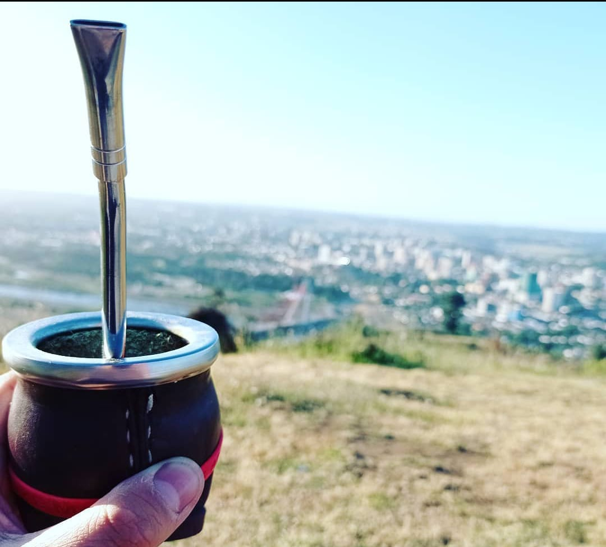

El Mate es una infusión hecha con hojas de yerba mate, planta originaria de las cuencas de los ríos de Argentina y Paraná. Estas plantas previamente secadas, cortadas y molidas forman la yerba mate, la cual tiene sabor amargo debido a los taninos de sus hojas.
Los CREADORES de este GRAN invento fueron los guaraníes, quienes habitaban el noreste del actual territorio de Argentina y gran parte de Paraguay y Brasil, quienes comenzaron a consumir las hojas de la planta de yeba mate, cuyo nombre científico es Ilex Paraguarensis Saint Hilaine.
Si quieres matear algun dia... mi wsp es +56976407371
Enlace directo a mi wsp https://api.whatsapp.com/send/?phone=56976407371&text&app_absent=0